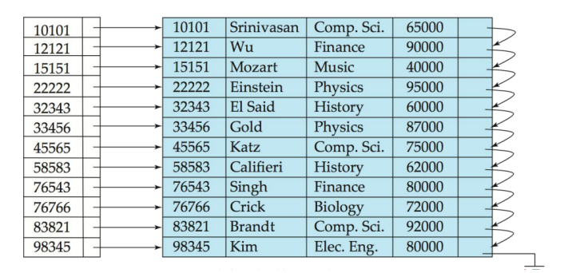
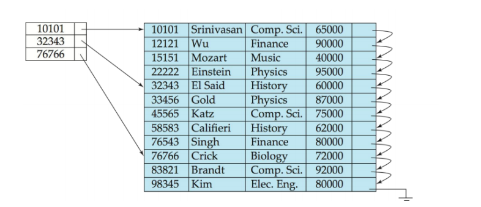

数据库系统设计02:索引(上)——B+树
在上一讲，我们深入了存储系统的“地基”，理解了数据是如何被“安放”的。我们看到了磁盘的笨拙，也领略了缓冲池的智慧。但仅仅把数据放好是远远不够的。想象一下，我们拥有了一座藏书亿万的巨型图书馆（数据文件），但馆内没有任何索引、目录或管理员。现在，我需要你找到一本名为《数据库系统概念》的书。你该怎么做？
你唯一的选择，就是从第一排书架的第一本书开始，一本一本地翻看，直到找到它，或者翻完整座图书馆后失望而归。这个过程，在数据库中被称为全表扫描（Full Table Scan）。如果我们的数据有1TB，磁盘读取速度是100MB/s，那么你的一次简单查询，就需要等待 1TB / 100MB/s = 1000GB / 0.1GB/s = 10000秒，将近3个小时！这在任何现实应用中都是不可接受的。
今天，我们的任务，就是为这座混乱的图书馆建立一套无与伦比的“导航系统”。这个系统，就是索引 (Indexing)。我们将共同踏上一段设计之旅，从最朴素的想法开始，不断遭遇问题，不断迭代优化，最终亲手“发明”出那个支撑了现代关系型数据库半壁江山的、几乎完美的索引结构——B+树。
这节课的核心，是理解它为何是今天这个样子。每一个设计细节背后，都是对物理定律的深刻洞察和对性能的极致追求。
第一部分：有序
1.1 堆文件 (Heap File) 与线性扫描
最原始的数据组织方式，就是堆文件。记录被随意地插入到文件的末尾，没有任何顺序可言。
- 查找成本: 要查找满足
WHERE P条件的记录，必须检查文件中的每一条记录。 - I/O成本分析: 假设文件有 $N$ 个数据块，查找的成本就是 $N$ 次磁盘I/O。对于刚才1TB的例子，如果块大小为8KB，那么 $N = 1TB / 8KB = 2^{40} / 2^{13} = 2^{27} \approx 1.3$ 亿个块。这是一场I/O的灾难。
1.2 排序文件 (Sorted File) 与二分查找
既然无序是问题的根源，那么最直观的改进就是——让数据有序。我们将数据文件本身，按照某个搜索键 (Search Key)（例如 StudentID）进行物理排序。
- 查找的飞跃: 数据有序后，我们可以使用二分查找 (Binary Search)。
- I/O成本分析:
- 每次查找，我们访问中间的块，比较后舍弃一半。这个过程不断重复。
- 查找成本从 $O(N)$ 骤降到 $O(\log_2 N)$ 次磁盘I/O。
- 对于1.3亿个块，成本是 $\log_2(1.3 \times 10^8) \approx 27$ 次I/O。从3小时锐减到
27 * 10ms ≈ 0.27秒！这是一个革命性的进步。
1.3 更新操作的缺点
- 插入操作 (Insertion):
- 问题: 假设我们要插入一条新的学生记录，根据
StudentID排序，它应该位于文件的正中间。 - 代价: 为了维持文件的物理有序性，我们必须将插入点之后的所有记录（平均半个文件）向后移动，为新记录腾出空间。这是一个规模巨大、成本高昂的写操作。
- 问题: 假设我们要插入一条新的学生记录，根据
- 删除操作 (Deletion):
- 问题: 删除一条记录后，会留下一个“空洞”。
- 代价: 为了填补这个空洞，要么将后续记录向前移动（同样是巨大的写操作），要么使用额外的指针链表来管理空闲空间，使文件变得碎片化和复杂化。
设计的第一个核心权衡： 我们通过强制数据物理有序，获得了极快的查找性能，但却付出了近乎无法接受的更新（插入/删除）代价。 这种结构，被称为聚集索引 (Clustered Index) 或主索引 (Primary Index)，因为数据本身就是索引。它只适用于极少更新、频繁查找的场景（例如，数据仓库中的事实表）。
1.4 解耦：构建独立的索引文件
既然修改数据文件本身太昂贵，那么我们能否将“有序的导航信息”和“无序的实际数据”分离开？—— 当然可以，这就是索引文件思想的诞生。
数据文件仍然是一个堆文件（插入/删除成本低），我们为其创建一个独立的、有序的索引文件。索引文件由一系列索引条目 (Index Entry) 组成，每个条目通常是 <搜索键, 指针> 的形式，其中指针指向数据文件中实际记录的位置（即RID = <PageID, Slot#>）。

- 稠密索引 (Dense Index):
- 定义: 为数据文件中的每一条记录，都在索引文件中创建一个对应的索引条目。
- 优点: 查找时，只需在（更小的）索引文件上进行二分查找，找到对应指针，然后一次I/O即可获取数据记录。
- 新问题: 如果原表有10亿条记录，那么稠密索引也有10亿条记录。虽然每条记录变小了，但索引文件本身可能依然非常巨大，大到无法放入内存。这意味着我们必须在磁盘上对索引文件进行二分查找，这依然会产生 $O(\log_2 N_{index})$ 次I/O。

- 稀疏索引 (Sparse Index):
- 定义: 只为数据文件中的每个数据块创建一个索引条目。该条目通常包含该数据块中的最小搜索键值，以及指向该数据块的指针。
- 前提条件: 数据文件必须按照该搜索键物理排序！ 否则，我们无法保证一个块内的所有键都大于等于索引键。
- 优点: 索引文件变得极小。例如，如果一个块能装100条记录，稀疏索引的大小就只有稠密索引的1%。
- 查找过程:
- 在稀疏索引中找到小于等于目标键的最大索引键。
- 通过指针定位到对应的数据块。
- 在数据块内部进行顺序或二分查找。
设计的第二个核心权衡：
| 索引类型 | 优点 | 缺点 | 适用场景 |
|---|---|---|---|
| 稠密索引 | 数据文件无需排序 | 索引文件大，占用空间多 | 辅助索引 (Secondary Index)，用于为非排序键建立索引。 |
| 稀疏索引 | 索引文件极小，空间效率高 | 数据文件必须排序 | 主索引 (Primary Index)，用于为排序键建立索引。 |
1.5 索引的问题
无论是稠密还是稀疏索引，当数据量达到一定规模，索引文件本身也会大到无法装入内存。
- 问题: 我们又回到了需要在磁盘上进行二分查找的窘境。
- 解决方案的萌芽：多级索引 (Multilevel Index)
- 既然一个索引太大，那我们就为这个“一级索引”再创建一个**“二级索引”**！
- 这个二级索引是一个针对一级索引的稀疏索引。
- 我们可以不断“套娃”，创建三级、四级索引……直到最顶层的索引小到可以完全载入内存。
-
- Level 2 (in memory):
<K1, Ptr_L1_Block1>,<K1001, Ptr_L1_Block2>, ... - Level 1 (on disk):
<K1, Ptr_D_Block1>,<K2, Ptr_D_Block2>, ... - Data File (on disk): Actual data records.
- Level 2 (in memory):
- 查找过程: 从顶层内存中的索引开始，逐级向下，每次I/O都将搜索范围缩小一个维度，最终定位到数据。
多级索引的致命缺陷： 它是一个静态结构。插入或删除一条记录，可能会导致某一级索引块的分裂或合并，进而引发上层索引块的连锁更新，维护成本极高，就像推倒第一块多米诺骨牌。
我们已经走到了传统有序索引的尽头。我们拥有了有序的力量，却被其僵化的结构所束缚。我们需要一种全新的数据结构，它必须：
- 保持多级索引的查找效率。
- 能够高效地、动态地处理插入和删除，而无需大规模重建。
- 为磁盘I/O量身定制。
第二部分：B+树
B+树不是凭空发明的，它是多级索引思想的动态化、平衡化的终极形态。它的一切设计，都服务于一个目标：在保证动态更新能力的前提下，最大限度地减少磁盘I/O次数。
2.1 B+树的核心设计哲学
-
哲学一：I/O按块，而非按字节。 磁盘I/O的成本在于寻道和旋转，而非传输量。所以，我们应该让每次I/O都尽可能“物有所值”。B+树的节点 (Node) 大小被设计为与磁盘块或内存页的大小（如4KB, 8KB, 16KB）相匹配。我们一次I/O就读入一个完整的、信息量巨大的节点。
-
哲学二：树的高度决定I/O次数。 从根节点到叶节点的路径上，每经过一个节点，通常就对应一次磁盘I/O。因此，要降低I/O，就必须降低树的高度。
-
哲学三：如何降低树的高度？—— 增加“扇出” (Fanout)。 要让树变得“矮胖”而非“瘦高”（像二叉树），唯一的办法就是让每个节点拥有尽可能多的孩子。这个“孩子数量”就是扇出。B+树通过在一个大节点内存储大量的键和指针，实现了巨大的扇出（通常是几百上千）。
2.2 B+树的结构解剖
一棵阶为 $n$ 的B+树满足以下性质：
-
节点类型:
- 内部节点 (Internal Nodes): 存储 $
- 叶子节点 (Leaf Nodes): 存储真正的索引条目，即 $
- 内部节点 (Internal Nodes): 存储 $
-
核心特性:
- 平衡性 (Balanced): 所有叶子节点都处于同一深度。这保证了任何查找的I/O次数都是稳定且可预测的。
- 扇出与填充率:
- 根节点至少有2个孩子（除非它也是叶子）。
- 每个内部节点有 $\lceil n/2 \rceil$ 到 $n$ 个孩子（指针）。
- 每个叶子节点有 $\lceil (n-1)/2 \rceil$ 到 $n-1$ 个键值对。
- **“半满策略”**是B+树能够优雅地进行分裂与合并，并保持平衡的关键。
- 数据全在叶子: 所有的数据指针（RIDs）都只存在于叶子节点。内部节点纯粹是导航用的稀疏索引。
- 叶子节点链表: 所有叶子节点通过指针相互连接，形成一个有序的双向链表。这是B+树支持高效范围查询的“神来之笔”！
-
B+树的高度有多低？
- 假设：块大小=4KB，键大小=8B，指针大小=8B。
- 一个内部节点可以容纳 $m$ 个指针，则 $m \times 8 + (m-1) \times 8 \approx 4096 \Rightarrow m \approx 256$。扇出约为256。
- 一棵高度为 $h=4$ 的B+树可以索引多少条记录？
- $N = (\text{fanout})^h \approx 256^4 \approx 4.3 \times 10^9$。
- 结论： 只需要4次I/O，我们就能在43亿条记录中定位到任何一条！这就是矮胖树的威力。
2.3 B+树的操作
2.3.1 查询 (Query)
这是最简单的操作，一个从上到下的递归过程：
- 从根节点开始。
- 在当前内部节点中，通过二分查找找到合适的指针（找到第一个 $K_i > V$，选择 $P_i$；若都小于V，选最后一个指针）。
- 加载该指针指向的下一层节点。
- 重复步骤2和3，直到到达叶子节点。
- 在叶子节点中，查找键V。如果找到，返回对应的RID。
2.3.2 插入 (Insertion)
核心流程:
-
定位: 首先像查询一样，找到应该插入新键的叶子节点 L。
-
尝试插入:
- Case 1: 叶子节点 L 未满。
- 太棒了！直接将新键值对插入L，并保持节点内有序。操作结束。
- Case 2: 叶子节点 L 已满。
- 这是魔法发生的地方——分裂 (Split)。
- a. 创建一个全新的叶子节点 L'。
- b. 将L中原有的 $n-1$ 个键和新插入的键，总共 $n$ 个键，进行排序。
- c. 前 $\lceil n/2 \rceil$ 个键留在L，后 $\lfloor n/2 \rfloor$ 个键移动到L'。
- d. 更新叶子链表指针，将L'插入到L的后面。
- e. 传播 (Propagate): 将L'的第一个键（即最小键）作为新的分隔符，连同指向L'的指针，向上插入到父节点中。
- Case 1: 叶子节点 L 未满。
-
递归分裂:
- 向上插入新的分隔符时，如果父节点也满了怎么办？
- 父节点也分裂！ 分裂过程与叶子节点类似，但中间的那个键被“提升”到它的父节点，左右两半形成两个新的内部节点。
- 这个分裂过程可能像多米诺骨牌一样，一路向上传播，直到根节点。
- 如果根节点分裂，B+树的高度就增加1。这就是B+树“长高”的唯一方式。
2.3.3 删除 (Deletion)
核心流程:
-
定位: 找到包含要删除键的叶子节点 L。
-
删除: 从L中删除该键值对。
-
检查下溢 (Underflow):
- Case 1: 删除后，L的键数量仍 $\ge \lceil (n-1)/2 \rceil$。
- 完美！操作结束。
- Case 2: 删除后，L的键数量 $< \lceil (n-1)/2 \rceil$（下溢）。
- 我们必须修复这个违反约束的节点。
- a. 尝试重分配 (Redistribution) / 借用 (Borrowing):
- 查看L的左兄弟或右兄弟（通过父节点指针可以找到）。
- 如果某个兄弟节点有多余的键（填充率 > 50%），就从它那里“借”一个键。
- 这个过程需要通过父节点来“旋转”：将兄弟的边界键移动到L，并更新父节点中的分隔符。
- 重分配的开销远小于合并，是首选方案。
- b. 如果无法重分配（兄弟节点也都刚好半满）：
- 合并 (Merge): 将L和它的一个兄弟节点合并成一个节点。
- 这个过程还需要从父节点中删除那两个节点之间的分隔符。
- Case 1: 删除后，L的键数量仍 $\ge \lceil (n-1)/2 \rceil$。
-
递归合并:
- 从父节点中删除分隔符，可能会导致父节点也下溢。
- 此时，对父节点重复上述的“重分配或合并”的逻辑。
- 这个合并过程也可能一路向上传播。
- 如果根节点的两个仅有的孩子被合并，那么这个旧的根节点被删除，合并后的节点成为新的根，树的高度减1。
第三部分：B+树的应用与变体
3.1 聚集索引 vs. 辅助索引的再探讨
- 聚集索引 (Clustered Index / IOT in Oracle):
- B+树的叶子节点就是数据本身。数据行的物理顺序与索引键顺序完全一致。
- 优点：对于基于索引键的范围查询性能极高，因为数据是连续存放的。
- 缺点：一张表只能有一个聚集索引。
- 实现 (MySQL InnoDB): 主键索引就是聚集索引。叶子节点包含主键和所有其他列的数据。
- 辅助索引 (Secondary Index):
- B+树的叶子节点存储的是
<索引键, 主键值>（或RID）。 - 查找过程：先在辅助索引中找到目标记录的主键，然后再用主键去聚集索引（主键索引）中查找完整的数据行。这个过程被称为**“回表” (Key Lookup)**。
- 优点：一张表可以有多个辅助索引。
- 缺点：每次查找都需要两次索引搜索（除非所需数据可以仅从辅助索引中获得，即覆盖索引 (Covering Index)）。
- B+树的叶子节点存储的是
3.2 复合索引 (Composite Index) 的威力
- 索引可以建立在多个列上，例如
CREATE INDEX idx_name ON users (last_name, first_name)。 - B+树中的键会按照
(last_name, first_name)的字典序进行排序。 - 最左前缀原则 (Leftmost Prefix Principle):
- 这个索引可以高效地服务于
WHERE last_name = 'Smith'的查询。 - 也可以服务于
WHERE last_name = 'Smith' AND first_name = 'John'。 - 但不能高效服务于
WHERE first_name = 'John'的查询，因为first_name不是最左前缀。
- 这个索引可以高效地服务于
3.3 B树 vs. B+树
| 特性 | B树 | B+树 | 为什么B+树在数据库中胜出？ |
|---|---|---|---|
| 数据存储 | 内部节点和叶子节点都存数据指针 | 只有叶子节点存数据指针 | 1. 更高的扇出：B+树内部节点不存数据，可以放更多键，树更矮胖，I/O更少。 2. 更稳定的查询性能：所有查询都必须走到叶子节点，路径长度稳定。 3. 范围查询极快：只需在叶子链表上顺序扫描，无需回溯树。 |
| 范围查询 | 效率低，需要中序遍历 | 效率极高，沿叶子链表扫描 | |
| 空间利用率 | 略高（某些数据可能在浅层） | 略低（键在内部节点和叶子冗余） | B+树的性能优势远比这点空间开销重要。 |